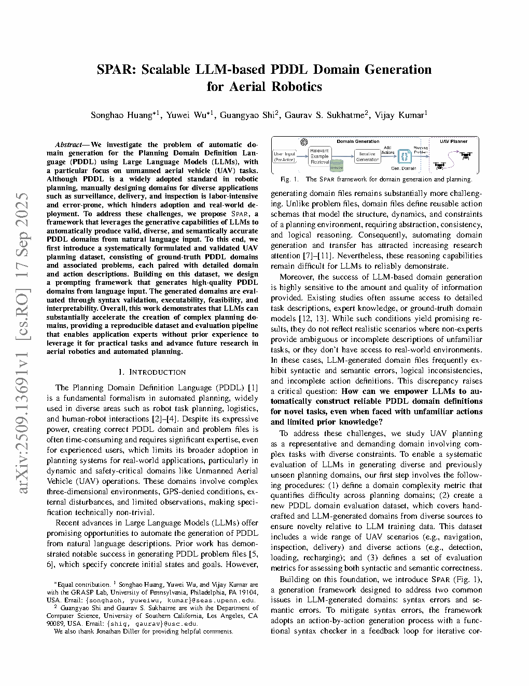
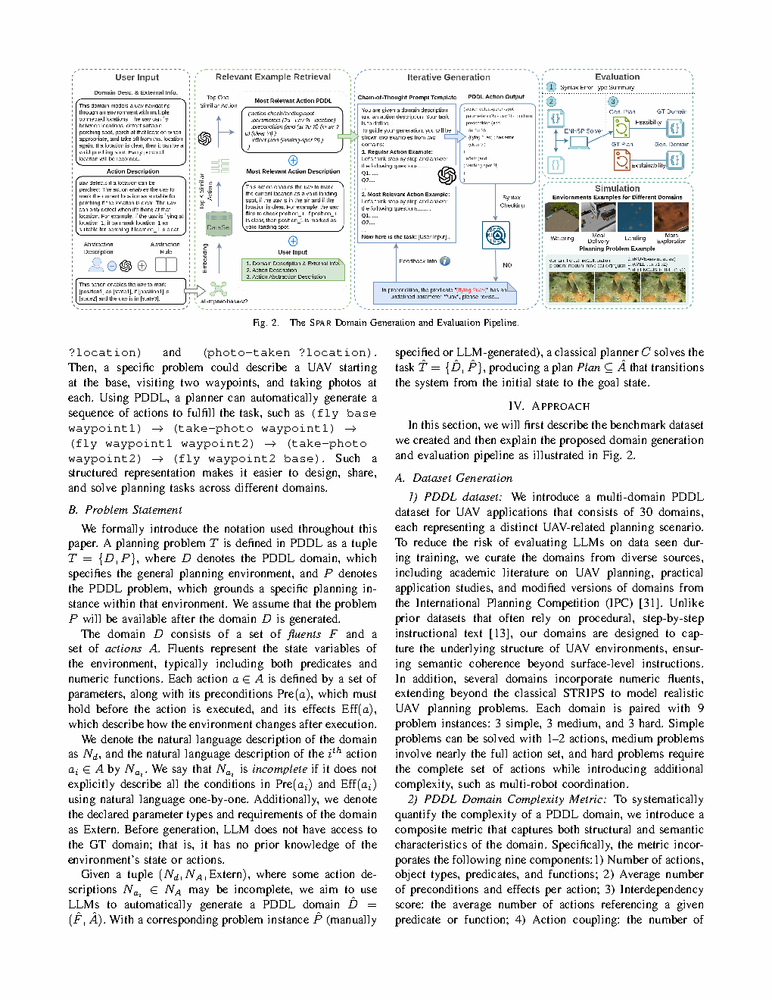
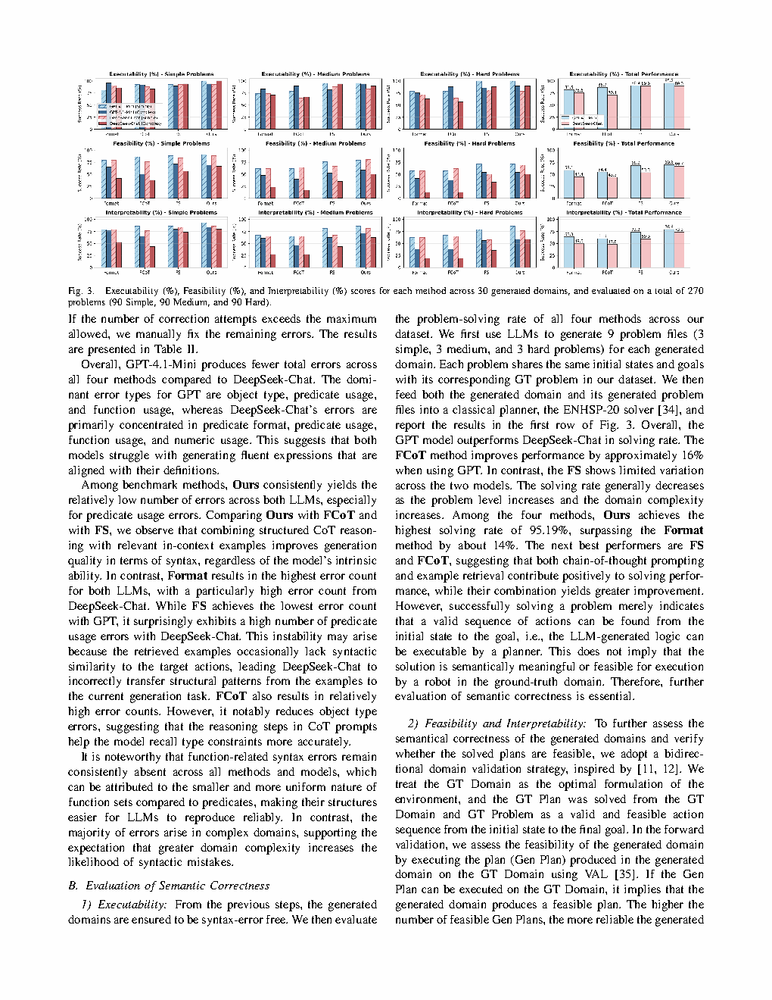

| 论文标题 | SPAR: Scalable LLM-based PDDL Domain Generation for Aerial Robotics |
| 作者 | Songhao Huang*, Yuwei Wu*, Guangyao Shi, Gaurav S. Sukhatme, Vijay Kumar (*equal contribution) |
| 所属机构 | University of Pennsylvania, GRASP Lab (Huang, Wu, Kumar); University of Southern California (Shi, Sukhatme) |
| 发表会议 | 2025 Conference (project page available) |
| DOI / 链接 | Project page available online | Dataset: 30 UAV PDDL domains, 270 problems |
| 一句话概述 | SPAR —— 一个基于LLM的自动PDDL领域生成框架，专注于UAV任务，从自然语言描述中自动生成PDDL领域。采用逐动作生成，结合 Chain-of-Thought推理 + 基于RAG的相关示例检索 + 迭代语法检查器反馈。引入了一个新的 UAV PDDL数据集，包含30个领域（14个简单，16个复杂）和270个问题。生成的领域语法有效且语义准确。 |
| 灵感来源 | 启发的洞察 | 类型 |
|---|---|---|
| LLM在一次性结构化输出生成中表现不佳（幻觉、语法错误） | 分解为逐动作生成 + 中间验证 —— 每个动作是一个更小、更易管理的子问题，降低了LLM的认知负荷 | 架构 |
| NLP中的Retrieval-Augmented Generation (RAG) | 从精心构建的数据集中检索相似的PDDL示例，以抽象动作描述为查询。检索到的示例充当模板，将LLM的生成锚定到有效的PDDL结构上 | 方法 |
| Chain-of-Thought提示提升多步推理能力 | 设计领域特定的CoT提示，引导LLM逐步推理："涉及哪些对象？每个对象需要什么前置条件？每个对象产生什么效果？现在写出PDDL动作。"这种结构化推理大幅减少了语义错误 | 策略 |
| 代码生成中的编译器/解析器反馈循环 | 集成PDDL语法检查器，验证每个动作，返回LLM友好的错误描述，迭代直到动作语法正确。这闭合了生成与验证之间的反馈回路 | 工程 |
flowchart TB
subgraph INPUT["Input"]
NL["Natural Language Task Description"]
end
subgraph STAGE1["Stage 1: Example Retrieval via RAG"]
EMBED["Embed abstract action descriptions
all-mpnet-base-v2"]
RETRIEVE["Retrieve top-K similar domains
cosine similarity from dataset"]
RERANK["LLM re-ranks candidates
selects best matching example"]
end
subgraph STAGE2["Stage 2: Action-by-Action CoT Generation"]
PER_ACTION["For each action in the domain"]
COT["CoT Prompting:
Q1: What objects?
Q2: What preconditions per object?
Q3: What effects per object?
Q4: Write PDDL action"]
FLUENT["Maintain dynamic fluent list
across all actions"]
end
subgraph STAGE3["Stage 3: Iterative Syntax Validation"]
CHECK["PDDL Syntax Checker"]
FEEDBACK{"Syntax valid?"}
ERROR["Parse error feedback
in natural language"]
RETRY["LLM retries with feedback"]
PASS["Action accepted"]
end
subgraph OUTPUT["Output"]
PDDL["Complete PDDL Domain"]
end
NL --> EMBED --> RETRIEVE --> RERANK --> PER_ACTION
PER_ACTION --> COT --> CHECK
CHECK --> FEEDBACK
FEEDBACK -->|"No"| ERROR --> RETRY --> COT
FEEDBACK -->|"Yes"| PASS
PASS -->|"More actions"| PER_ACTION
PASS -->|"All done"| PDDL
FLUENT -.-> COT
classDef input fill:#fef7ed,stroke:#f59e0b,stroke-width:2px
classDef stage1 fill:#e8f0fe,stroke:#3b82f6,stroke-width:2px
classDef stage2 fill:#f0ebfd,stroke:#8b5cf6,stroke-width:2px
classDef stage3 fill:#e6f7ee,stroke:#10b981,stroke-width:2px
classDef output fill:#dbeafe,stroke:#2563eb,stroke-width:2px
class NL input
class EMBED,RETRIEVE,RERANK stage1
class PER_ACTION,COT,FLUENT stage2
class CHECK,FEEDBACK,ERROR,RETRY,PASS stage3
class PDDL output
flowchart TB
subgraph DATASET["UAV PDDL Dataset (30 domains)"]
SIMPLE["14 Simple Domains"]
COMPLEX["16 Complex Domains"]
end
subgraph RETRIEVAL["RAG Retrieval"]
QUERY["Abstract action description"]
SIM["Cosine similarity against
all domain embeddings"]
TOPK["Top-K candidates"]
LLM_RANK["LLM re-ranks: selects
best structural match"]
end
subgraph GENERATION["Action Generation Loop"]
INIT["Initialize: types, predicates
from NL description"]
A1["Generate action-1 with CoT"]
V1["Syntax check action-1"]
A2["Generate action-2 with CoT
(uses fluent list from action-1)"]
V2["Syntax check action-2"]
AN["... continue for all actions"]
end
subgraph VERIFICATION["Domain Verification"]
SYNTAX["Full domain syntax check"]
EXEC["Executability: planner test
on 9 problems"]
SEMANTIC["Semantic: feasibility
+ interpretability"]
end
SIMPLE --> SIM
COMPLEX --> SIM
QUERY --> SIM --> TOPK --> LLM_RANK --> INIT
INIT --> A1 --> V1 --> A2 --> V2 --> AN
AN --> SYNTAX --> EXEC --> SEMANTIC
classDef data fill:#fef7ed,stroke:#f59e0b,stroke-width:2px
classDef ret fill:#e8f0fe,stroke:#3b82f6,stroke-width:2px
classDef gen fill:#f0ebfd,stroke:#8b5cf6,stroke-width:2px
classDef ver fill:#e6f7ee,stroke:#10b981,stroke-width:2px
class SIMPLE,COMPLEX data
class QUERY,SIM,TOPK,LLM_RANK ret
class INIT,A1,V1,A2,V2,AN gen
class SYNTAX,EXEC,SEMANTIC ver
flowchart TD
subgraph OFFLINE["Offline Preparation"]
O1["Curate UAV PDDL dataset
30 domains, 270 problems"] --> O2["Compute embeddings
all-mpnet-base-v2"]
O2 --> O3["Define complexity metric
9 components, weighted sum"]
end
subgraph ONLINE["Online Domain Generation"]
N1["User provides NL description"] --> N2["Extract abstract action
descriptions via LLM"]
N2 --> N3["For each action:
embed + retrieve + CoT + validate"]
N3 --> N4["Assemble complete PDDL domain"]
end
subgraph EVAL["Evaluation"]
E1["Syntax: count errors"] --> E2["Executability: planner solves?"]
E2 --> E3["Feasibility: generated plans
valid on GT domain?"]
E3 --> E4["Interpretability: GT plans
valid on generated domain?"]
end
OFFLINE --> ONLINE --> EVAL
classDef off fill:#fef7ed,stroke:#f59e0b,stroke-width:2px
classDef on fill:#e8f0fe,stroke:#3b82f6,stroke-width:2px
classDef ev fill:#e6f7ee,stroke:#10b981,stroke-width:2px
class O1,O2,O3 off
class N1,N2,N3,N4 on
class E1,E2,E3,E4 ev
| 类别 | 内容 | 细节 |
|---|---|---|
| 输入 | 自然语言任务描述 + 可选的领域名称 | UAV任务的自然语言自由文本描述（如"多架UAV对观测点进行森林火灾监测"） |
| 输出 | 完整的PDDL领域文件 (.pddl) | 包含类型、谓词、函数以及所有带参数、前置条件和效果的动作模式 |
| 目标 | 生成可被标准PDDL规划器（如 Fast Downward）使用的领域，用于求解9个关联问题 | 可执行性目标：95%以上的问题求解成功率 |
这是一个面向机器人规划的自动化知识工程任务。核心挑战是将UAV任务的非正式自然语言描述转化为可被经典规划器使用的形式化PDDL领域规范。该任务处于自然语言理解（从文本中提取类型、动作、约束）、代码生成（生成语法正确的PDDL）与领域建模（确保语义忠实于预期的UAV任务）三者的交汇点。生成的领域在下游被PDDL规划器消费，用于生成可执行的UAV任务计划。
| 先前方法 | 核心思路 | 失败原因 |
|---|---|---|
| 人工编写PDDL | 人类专家使用PDDL编辑器手工编写领域 | 劳动密集、需要PDDL专业知识、无法扩展到多个领域。每个新的UAV任务需要数天的专家投入。 |
| 基于模板的生成 | 预定义的领域模板，从结构化输入填充槽位 | 不灵活——无法处理模板覆盖范围之外的新颖任务结构。UAV任务多样（监视、配送、消防），难以模板化。 |
| 朴素LLM提示（一次性生成） | 提示LLM从自然语言描述直接输出完整PDDL领域 | 语法错误率高（Format基线：GPT-4.1-mini共41个语法错误）。语义不一致：LLM虚构谓词和类型，与任务描述无关。 |
| LLM + 语法检查器（无检索） | LLM生成，语法检查器验证，出错重试 | 减少语法错误但不改善语义准确性。没有相关示例，LLM仍然虚构错误的谓词语义。 |
SPAR是一个三阶段检索增强生成流水线。阶段1（RAG检索）嵌入抽象动作描述，使用余弦相似度 + LLM重新排序从精心构建的数据集中检索结构最相似的领域。阶段2（逐动作CoT生成）顺序生成每个PDDL动作模式，由检索到的示例和动态fluent列表引导，该列表跟踪跨动作的谓词/类型一致性。阶段3（迭代验证）检查每个动作的语法，并提供自然语言错误反馈用于重试，直到动作语法正确。
| 参数 | 取值 | 含义 | 取值理由 |
|---|---|---|---|
| 嵌入模型 | all-mpnet-base-v2 | 用于检索的sentence transformer | 768维嵌入，语义相似性表现强；在多样化句子对上预训练 |
| 检索Top-K | 5 | LLM重排序前的候选领域数 | 平衡召回率（K=1可能遗漏好匹配）与重排序成本（K=20过于昂贵） |
| LLM主干 | GPT-4.1-mini（主要） | 用于领域生成的LLM | 综合最佳：95.19%可执行性。DeepSeek-Chat作为辅助评估 |
| 每动作最大重试次数 | 3 | 语法修正尝试次数 | 大多数错误在1-2次重试内解决；3次提供安全余量 |
| 数据集规模 | 30个领域，270个问题 | 精心构建的UAV PDDL数据集 | 14个简单 + 16个复杂；每个9个问题；涵盖配送、监视、巡检、消防 |
| 复杂度阈值 | C = 0.4 | 简单与复杂的划分线 | 经验校准；简单领域低于，复杂领域高于 |
理解SPAR需要掌握三个基础概念：PDDL作为形式化规划语言、面向结构化输出的检索增强生成，以及为什么分解优于整体生成来处理形式化语言。
根本矛盾：PDDL要求组合正确性——每个局部子表达式都必须有效，整体才有效。LLM自回归地生成文本——每个token是基于先前token预测的，但无法保证 token-t+100 与 token-t 一致。这就是一次性生成失败的原因：当LLM写到动作5的前置条件时，它可能已经"忘记"了在动作1中定义的谓词签名。
为什么用动作描述的余弦相似度而非完整领域文本？完整领域PDDL文本包含底层语法（括号、关键词），这些主导了嵌入但携带很少的语义信号。抽象动作描述（"UAV从一个位置移动到另一个位置"）捕捉了领域的功能结构——动作做什么，而非怎么写。这产生了更多结构相关的检索结果。
论文图表。将截图保存至 figures/ 子目录。命名为 fig1.png 等可启用自动显示。

请将截图保存为figures/fig1.png该图展示了完整的SPAR流水线。从自然语言任务描述（如"UAV巡逻并监测区域"）开始，SPAR经过三个阶段：(1) 基于RAG检索，从精心构建的UAV PDDL数据集中检索结构最相似的领域；(2) 逐动作CoT生成，逐步推理每个动作；(3) 迭代语法验证，提供LLM友好的错误反馈。输出是一个完整、语法有效、语义准确的PDDL领域。

请将截图保存为figures/fig2.png关键结果：SPAR（标注为"Ours"）使用GPT-4.1-mini达到了95.19%的可执行性，显著优于所有基线方法：Format (81%)、FCoT (Format+CoT) 和 FS (Format+Semantic)。在复杂领域上性能差距尤其大，朴素提示方法在此大幅退化。DeepSeek-Chat也受益于SPAR的流水线，但在所有方法上始终不如GPT-4.1-mini。

请将截图保存为figures/fig3.pngUAV浇灌（UAV Watering）：多架UAV必须协调在田间浇灌植物，同时满足电池约束和避免碰撞。SPAR生成了一个包含耦合动作（fly, water, recharge）和数值fluent（battery level）的领域。可移动障碍物（MovableObs）：一架UAV和一辆UGV协作——UGV移动障碍物为UAV清出路径。这需要跨智能体谓词耦合和条件效果。
| 数据问题 | 潜在困难 | 严重程度 |
|---|---|---|
| 数据集覆盖偏差 | 30个领域是人工精心构建的——它们可能过度代表了某些UAV任务模式（监视、配送），而对其他模式（集群战术、对抗场景）代表不足。在分布外任务上的生成质量可能显著降低。 | **** |
| LLM主干依赖性 | GPT-4.1-mini和DeepSeek-Chat之间的结果差异显著。随着LLM API演进或定价变化，SPAR的性能可能波动。无法保证未来的LLM版本表现同样出色。 | **** |
| 语义评估主观性 | 可行性和可解释性指标需要ground-truth领域作为对比。在实际部署中，这样的GT领域不存在——用户生成领域恰恰是因为没有GT存在。 | *** |
| 语法检查器覆盖率 | PDDL语法检查器捕获语法错误但不捕获语义错误。一个语法有效的领域仍可能语义错误（如前置条件与效果互换）。 | ** |
| 参考文献 | 为什么重要 |
|---|---|
| Liu et al. (2023) -- LLM+P: Empowering large language models with optimal planning proficiency. arXiv | 使用LLM进行PDDL规划的奠基性工作。LLM+P使用LLM将自然语言转化为PDDL问题（而非领域）。SPAR解决了互补的领域生成任务。 |
| Guan et al. (2024) -- Leveraging pre-trained large language models to construct and utilize world models for planning. ICAPS | 与LLM-based PDDL领域构建相关的方法。SPAR的关键进步是检索 + CoT + 语法反馈流水线，大幅提升了生成质量。 |
| Silver et al. (2024) -- Generalized planning in PDDL domains with pretrained large language models. AAAI | LLM直接在PDDL领域中进行规划。理解从领域生成（SPAR）到问题生成再到计划执行的完整流水线至关重要。 |
| Huang & Wu et al. (2025) -- SPAR project page and dataset | 30个领域的UAV PDDL数据集本身就是一个贡献——它提供了第一个用于评估UAV特定任务PDDL生成方法的标准化基准。 |